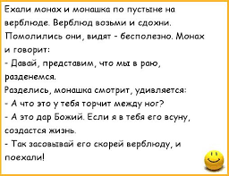
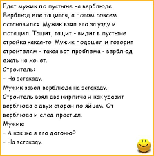

- Кожен сьомий у світі китаєць, а кожен п'ятий у світі псих. Ми живемо у світі де панують китайці й психи :)
- Жінка в спідниці привертає увагу чоловіків на 25% більше, ніж в штанах :)
- Збираючись на літній курорт 33% людей забувають покласти у валізу речі для купання :)
- Експортна назва автомобіля Лада Калина для Фінляндії — Lada 119, оскільки в перекладі з фінської Kalina значить тріск, гуркіт, деренчання і стукіт :)
- this is text :)
- Американські вчені встановили дивовижний факт, що стосується природи людської ліні. Лабораторний досвід над мишами дозволив встановити, що, виявляється, лінь здатна передаватися у спадок :)
- Винахідник Вазеліну вживав його в їжу, по 1 ложці щоранку :)
- У Китаї англомовного населення більше ніж в сполучених штатах :)
- Олені чоловічої статі скидають роги під Різдво, так що олені, що везуть сани Санти, мабуть, жінки або кастрати :)
- Джастін Бібер позбувся 80 000 своїх фоловерів в Твіттері після того, як обстриг волосся :)
- У 18 столітті серед парижанок було модно носити капелюшки з громовідводами :)

